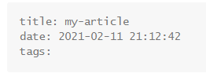
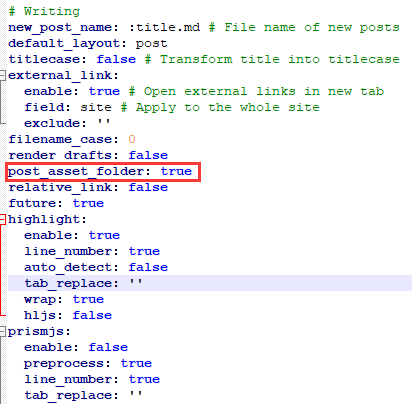
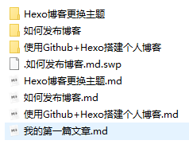
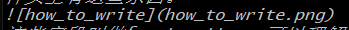

hexo如何发布博客
前文
搭建Hexo完成后，如何发表一篇文章呢，要知道Hexo生成的博客是不需要数据库与专门的服务器来使用的，所以实际上发表文章用的是静态文件，Hexo使用markdown来生成页面，所以这里建议你先了解一些简单的markdown语法，学习难度不高，而且实用、优雅，不管你是不是程序员都可以学习一下。
生成文章
这里我们主要用到Hexo的指令hexo new [layout] <articleName>。
其中layout可选，默认值是post，其他两种取值是page和draft，articleName是文章名称，必填。这里假设我们不输入layout，也就是使用默认的post布局，执行以上命令后，在项目的source/_posts目录会产生一个md文件，这就是我们的文章主体，直接使用记事本或者md编辑器对其进行编辑即可。
接下来看看文章的md文件吧，打开刚生成source/_posts目录下的md文件，一般可以看到文件头上有这些东西。

这些字段叫做front-matter，可以理解为文章的基本信息，比如title就是文章标题，date为发布日期，tags为文章标签，其他字段具体有什么作用可以参考hexo官方文档。设置好这些front-matter后，就可以使用markdown语法来写自己的文章了，除了插入图片会稍微麻烦点。
插入图片
我们虽然可以用cdn的形式让markdown去引用网上的图片，但效率会比较低，而默认情况下hexo的文章生成时是没法引用静态图片的。
为了插入图片，先在项目根目录下安装一个插件。npm install hexo-asset-image --save
随后打开hexo主配置文件_config.yml,找到post_asset_folder项，将其改为true。

改完后保存退出，下一次你使用hexo new来生成文章时，source/_posts目录里就会多一个目录，它的名字与你的文章一样。

你可以在这个目录里存放当前文章的图片，在写文章时，只需要像下面这样进行引用就行了。

hexo clean命令
你可能注意到，第一次执行了hexo g后，项目目录下多了一个public目录，这其实是hexo将md文件转换为html文件的结果，部署到Github Pages时，使用的也是public目录的内容。
如果你删除了一些以前的文章，重新执行hexo g && hexo s，结果发现这些文章仍然还在，这是因为hexo每次generate都是追加元素的，并不是覆盖掉public目录。
所以如果你想每次部署服务时，都使用当前最新的source目录来生成public，那么应该使用下面这条命令。hexo clean
它可以删除public目录，与其他的命令一起用的话，可以这样。hexo clean && hexo generate && hexo server
其中hexo server可以替换成hexo deploy。